A paper peak with the sun behind it
The mark is a tiny diorama: an app-icon tile, two aurora strips, a sodium sun rising behind a paper “A”, whose counter is a window onto the light. Every piece casts a short paper shadow. The wordmark sets Bricolage Grotesque 800 (outlined to paths) with an “AS” label stuck on like a strip of tape.
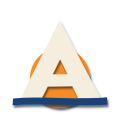
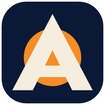
identity/logo-mark.svg · logo-glyph.svg (no tile) · favicon.svg + favicon-180.png (apple-touch) · logo-mark-512.png

Open Graph image
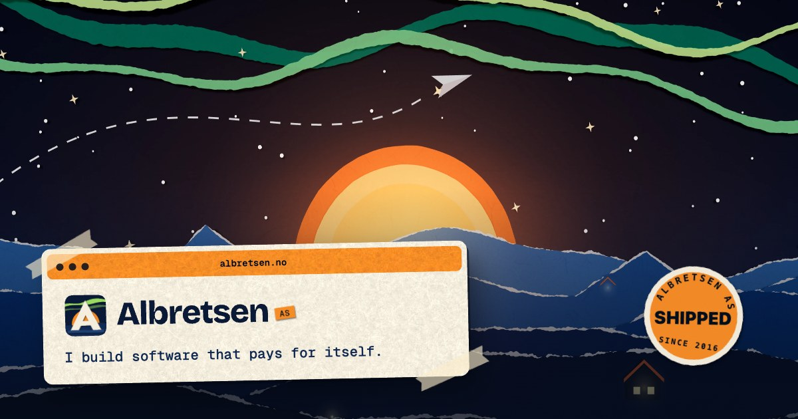
identity/og-image.jpg · 1200×630 · composed from the wallpaper render, cream paper, tape and the shipped sticker.
Night blues, one sodium lamp, a green aurora
Blue carries the depth: each hill layer is one step darker as it comes forward. Sodium orange is the only warm light and is reserved for things that are “on”. The seed hue 132° becomes the aurora: a single green that never touches text.
Bricolage Grotesque has ink traps and a slightly hand-cut wobble at display sizes, so it sits naturally on paper.
113,000+ installs · $782 MRR · 549 commits
On Google Play since 2016.
Both from Google Fonts (OFL). Scale: 112 / 72 / 44 / 28 / 18 / 15 / 12. Tracking −0.035em at display sizes; mono labels +0.12em uppercase.
The desk, the wallpaper, and six layers to tilt
Rendered from the live scene in live/paperkit.js (extruded torn-edge sheets, canvas-made paper fibres, PCF shadows, a sodium point light) through headless Chrome at 2880×1800, then encoded to AVIF + WebP.
hero/desktop(@2x).avif|webp · full desktop: menu bar, terminal, Products window with the real icons, dock, cursor.
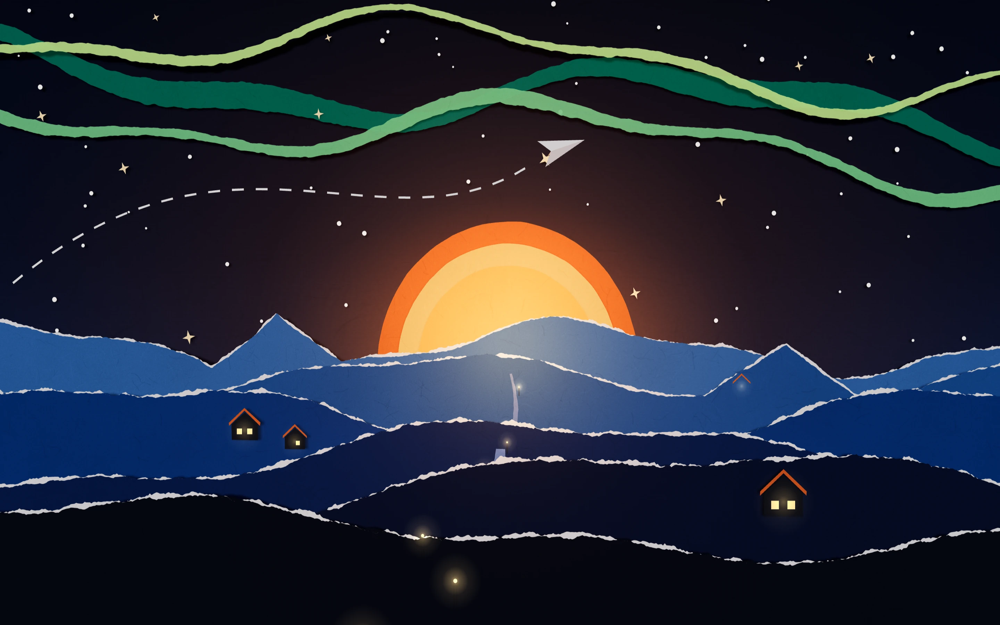
hero/wallpaper(@2x).avif|webp · the wallpaper alone, for live HTML windows on top. Lower third is quiet on purpose: headline space.
Signature delight: tilt the layers
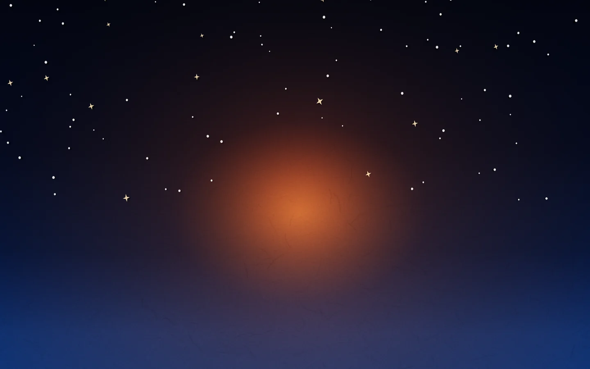
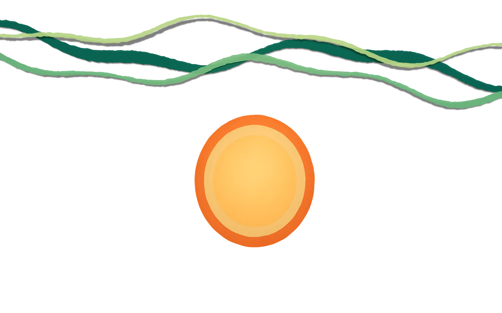
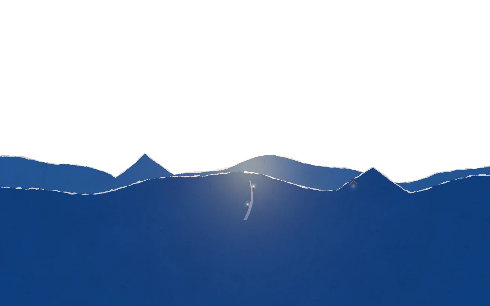
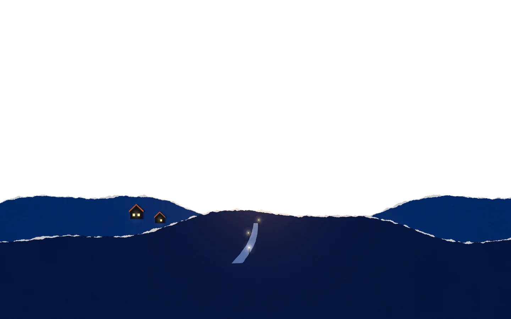
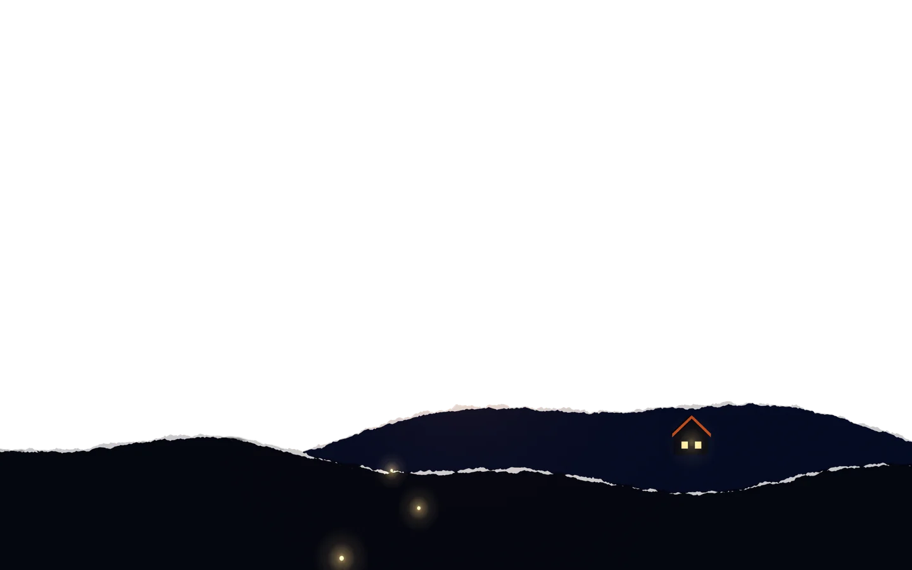
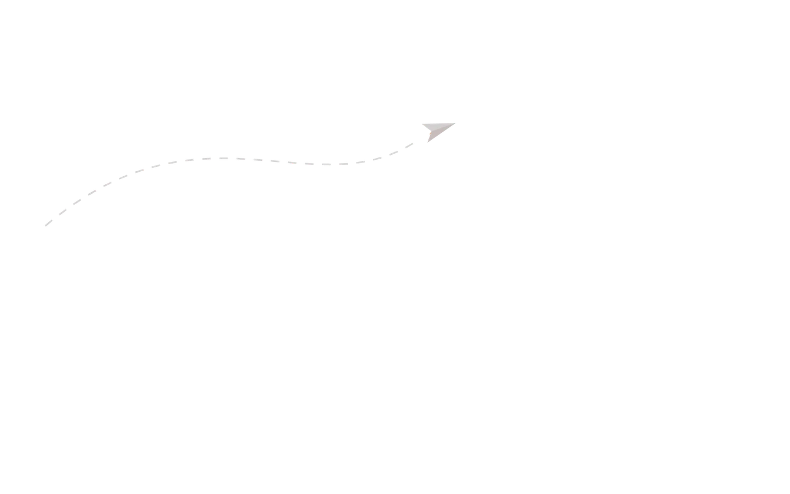
hero/layers/{sky, aurora-sun, far, mid, near, plane}(@2x).webp · alpha WebP with baked contact shadows. Rendered with a wider camera so ±3% overscan never shows an edge.
Four live sheets, six in the archive
Each product gets the same night set and its own props: envelopes for MCP Emails, fill-in slips for Fun Libs, connector chips for Toolrails, a held-for-approval note for Harbor. The logos are the real files from _shared/products, printed onto paper tiles, never redrawn.
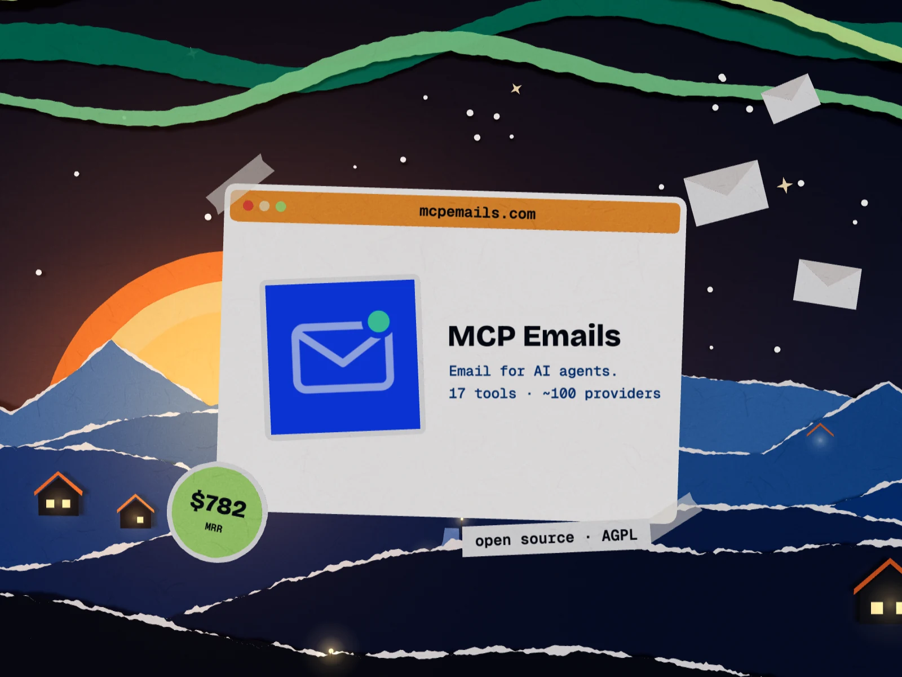
products/mcp-emails(@2x).webp · real mcp-emails/icon.png
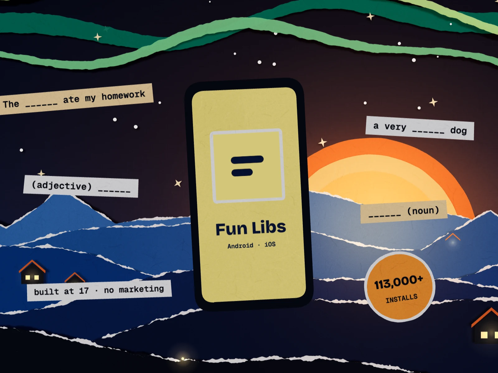
products/fun-libs(@2x).webp · real fun-libs/icon.png (v5)
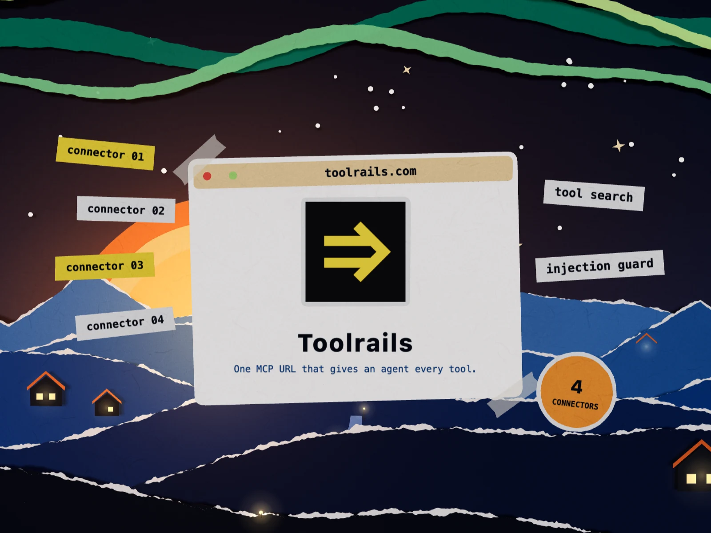
products/toolrails(@2x).webp · real toolrails/icon.svg
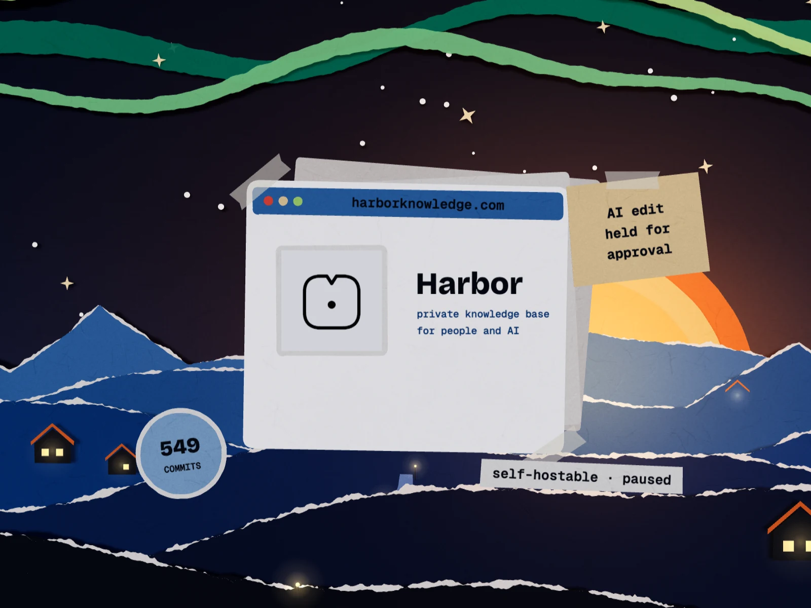
products/harbor(@2x).webp · real harbor/harbor-mark.svg
Archive (retired)
Luma · real logo
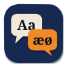
Polyglot Pilot
PinPoint
WebVakt
Daily Jokes / Joke Central
Tryggere Hyring
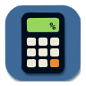
Early apps
Stand-ins are paper app tiles in the house style, clearly not logos. They live in an “Archive” folder on the desktop.
Things to scatter on the desk
Desktop icons and cursors for the OS conceit, stickers for numbers and asides, three seamless paper stocks, torn-edge dividers, tape, and two spot crops from the render.
Desktop icons · extras/icons/*.svg
Stickers · extras/sticker-*.svg, tape.svg

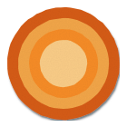
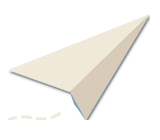
Paper stocks · seamless 512px · extras/paper-{night,cream,sodium}.webp
Torn edges · extras/torn-edge-{night,paper}.svg, torn-mask.svg
Spot crops · extras/spot-sunrise.webp, spot-cabins.webp
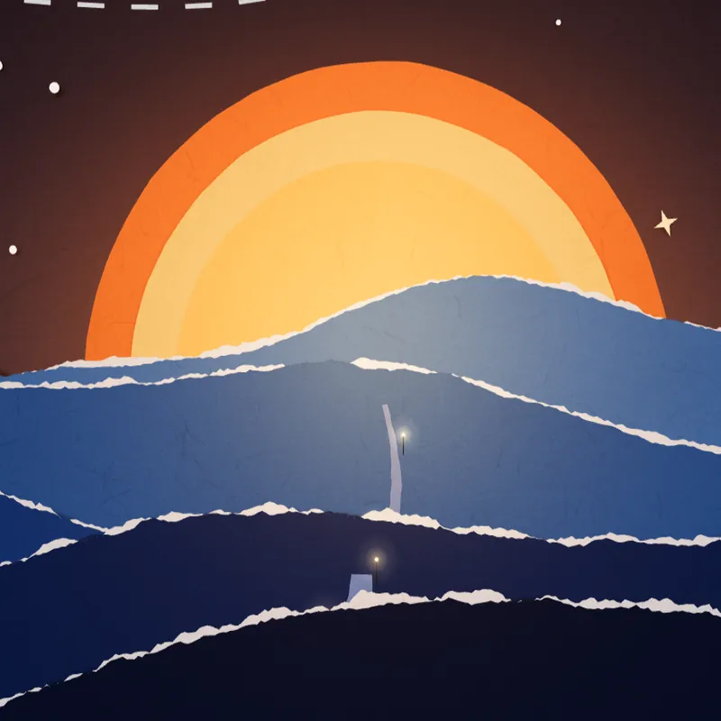
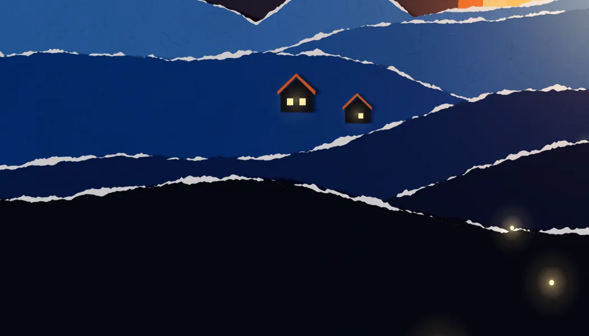
It keeps moving
Three interactive pieces. The centrepiece is a raw WebGL fragment shader that draws the whole paper night in one pass. The mark exists as a real .glb of stacked paper layers that fan apart on hover. The full desk scene runs live in three.js (it is the hero above).
live/papercut-shader.js · raw WebGL1, no deps · torn rims, drop shadows, aurora, sun rings, punched stars · parallax from pointer/gyro · demo papercut-demo.html
live/albretsen-mark.glb + live/mark-3d.js · hover or tap to explode the layers · demo mark-3d-demo.html
Also: live/paper-desk.js (mountPaperDesk, used in the hero; toggle UI in paper-desk-demo.html) and live/paperkit.js (the scene kit that baked every render).
Paper physics for Radix primitives
Every primitive behaves like a sheet: dialogs unfold from a hinge, tooltips are slapped on like stickers, tabs shuffle a stack, accordions tear open. Selectors key off Radix data-state / data-side, so the same CSS drives real Radix.
Hinged at the top edge, rotateX −78° → 0 on a damped spring; the shadow grows as it lands.
Scale .55 + rotate −9° to −2° with overshoot. Exit skews off like peeling.
Since 2016 on Google PlayThe card lifts toward the pointer; its hover card slides out from underneath.
Collage pieces fall into place with a spring, staggered by --i, each landing on its own resting angle --r.
View Transitions: the next page is revealed behind a torn vertical edge sweeping left to right.